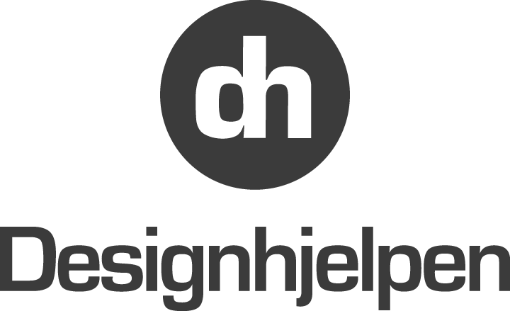

Ninni
Designhjelpen is an consultant student organization from Industrial Design, NTNU. The organization specializes in arranging workshop for companies and start-ups, that need design input. Designhjelpen consist of 5-10 students mainly from Industrial Design. With feedback from Designhjelpen, we are aware of that they have a website today, but it does not cover their needs. It is very important for them that their website is easy to use, and look professional, because this is the only way companies can contact and learn about Designhjelpen.
Purpose: The website should be a place where companies can get information about Designhjelpen and get in contact with them. Goals: The goal of the website is therefore to be an clear and well organized information channel as well as making it easy for the client to get in contact. The website should also look visually appealing, as it also works as a promotion for Designhjelpen and therefore need to look professional. How to accomplish: We want to structure the website with a clear meny. We also want to use an color scheme that fits the graphical profile of Desighjelpen. We want to use graphics and pictures to make the website appealing and professional. The website should give the user the ability to contact Designhjelpen.
The target audience is companies and startups who are looking for design input or want to increase their knowledge and skill in design, especially in interactive design, product design and service design. This includes companies or startups who need inspiration and guidance on a project. They could also just be interested in getting a better understanding of design. Other typical users are students who are seeking help for a school assignment and could benefit from a design workshop. They could also be students who are interested in learning about Designhjelpen and becoming a member of Designhjelpen.
Bendik, Kasper, Ninni and Mia
12.09.2017
Contact person: Torgeir Bell
Designhjelpen is a consultant student organization from Industrial Design at NTNU. The organization specializes in arranging workshop for companies and startups that could benefit from getting design inputs. Designhjelpen consist of 5–10 students mainly from Industrial Design. With feedback from Designhjelpen, we are aware that they currently have a website, but it does not cover their needs. It is very important for them that their website is easy to navigate and professional because it is the only way companies learn about and contact Designhjelpen.
The purpose of the website is to provide information about Designhjelpen and a way for companies to get in contact with them. The goal of the website is therefore to be a clear and intriguing information channel as well as to make it easy for clients to get in contact. Therefore we plan on including a description of what they do and who they are, as well as contact information. In addition we want to make it easy for users to apply for a job at Designhjelpen by providing a way for people to apply for a job through the website. Similarly, we want to create an easy way for companies to apply for a workshop through the website. The website should look visually appealing and professional, as it also functions as promotion for Designhjelpen. We want to use a color scheme that fits the graphic profile of Designhjelpen and use graphical elements and images to make the website visually appealing and professional.
The target audience is companies and startups who are looking for design input or want to increase their knowledge and skill in design, especially in interactive design, product design and service design. This includes companies or startups who need inspiration and guidance on a project. They could also just be interested in getting a better understanding of design. Other typical users are students who are seeking help for a school assignment and could benefit from a design workshop. They could also be students who are interested in learning about Designhjelpen and becoming a member of Designhjelpen.
This section is supposed to give an overview of Designhjelpen and contain brief summaries from the rest of the website. The home page should explain the service Designhjelpen provides in a clear manner and place visual emphasis on the value of the service. We plan on creating a full size image together with a slogan to engage attention, as well as short sections underneath about what they do and who they are along with a link to more information. This will contribute to fulfill the purpose of providing information along with the goal of being clear and intriguing.
In this section we will provide more information about what Designhjelpen actually does and describe in more detail how it is organized and what to expect. One of the goals was to be clear and intriguing and therefore we plan on making a guide on how to apply for a workshop and what to expect from that workshop afterwards, putting emphasis on the benefits of doing a workshop with the help from Designhjelpen.
This section will further explain who Designhjelpen are and tell more about its members.
Here we will provide contact information such as e–mail and telephone. This will contribute to fulfill the purpose of being a way to get in contact with Designhjelpen.
This will be an application for a job at Designhjelpen. This will be another way to get in contact with Designhjelpen and an easy way to apply for a job.
This will be an application for a workshop intended for companies. This will be one of the most important sections on the webpage as this is the main way for companies to request service from Designhjelpen. This will further fulfill the goal of being an easy way to get in contact and request a workshop with Designhjelpen.